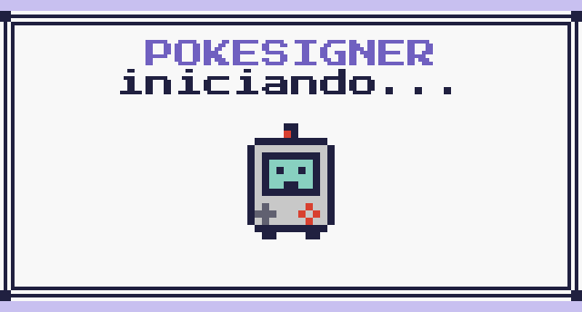

POKESIGNER
Assinador Bitcoin via Bluetooth para placas ESP32 com tela. Firmware 0.8.0.

▶ 1. GRAVAR FIRMWARE
- Ligue a placa no computador pelo cabo USB-C (precisa ser um cabo de dados).
- Escolha a sua placa abaixo, clique em Instalar e escolha a porta “USB JTAG/serial debug unit” (C6/C3) ou “USB Single Serial”/CH9102/CP2104 (T-Display).
- Aceite apagar a memória. A gravação leva cerca de 1 minuto.
Para atualizar uma placa que já tem o PokeSigner (ou se a gravação não começar): segure o botão BOOT, aperte e solte RESET, solte BOOT e clique em Instalar. Por segurança, o firmware não deixa o computador reiniciar a placa sozinho.
▶ 2. CONFIGURAR SEED (NA PLACA)
A seed é criada só no dispositivo, pela tela e pelos botões. O computador não vê nem digita palavras ou passphrase: depois de gravar, pode desconectar o cabo e ligar a placa em qualquer carregador USB.
- Botões: aperto curto = próxima opção; segurar ~0,7 s = escolher. (C3: o botão GPIO10 volta uma opção.)
- GERAR: 24 palavras do gerador aleatório do chip, mostradas só na tela, com o número de cada uma na lista BIP39 (1–2048). Anote e depois escolha na tela 3 palavras pedidas.
- DADOS: jogue um dado comum e informe cada resultado (mínimo 20, recomendado 99). A seed é SHA-256(aleatório do chip + dados + tempo), igual à PokeWallet: os dados só somam entropia.
- IMPORTAR: 12 ou 24 palavras, digitadas pelo número da palavra na lista oficial BIP39 (1–2048, a linha do arquivo
english.txt) ou letra por letra. A placa mostra a palavra para você conferir e valida o checksum no fim. - PASSPHRASE: nenhuma ou digitada nos botões, com revisão antes de gravar.
CONECTAR A PLACA
Necessário para o modo VIA PC e para diagnóstico (info, girar a tela, potência e teste do Bluetooth). Clique em Conectar com a placa no cabo.
IMPORTAR PELO COMPUTADOR (TECLADO VIRTUAL)
Mais rápido que pelos botões. Use só para importar uma seed que você já tem; para criar uma nova, use GERAR ou DADOS na placa.
- Na placa, escolha VIA PC (a placa só aceita palavras do computador nesse modo, escolhido por você no dispositivo).
- Clique em Conectar (acima).
- Desligue a internet (Wi-Fi e cabo). Esta página continua funcionando sem internet.
- Digite clicando no teclado virtual. As teclas mudam de lugar a cada palavra.
- Clique em Enviar para a placa e confira as palavras na tela da placa.
INTERNET: ?
PASSPHRASE (OPCIONAL)
▶ 3. PAREAR COM O CELULAR
Com a seed configurada, a placa mostra o ID (fingerprint) e o nome PokeSigner-XXXX, e fica esperando o celular. Pode tirar do computador e ligar em qualquer carregador USB.
- Conecte pela carteira (PokeWallet ou outra compatível), com o Bluetooth do celular ligado.
- A placa mostra um código de 6 dígitos: digite no aviso de pareamento do celular. Só na primeira vez.
- Na carteira, importe a conta do Signy. A carteira lê o ID e as chaves públicas; a seed nunca sai da placa.
ASSINAR UMA TRANSAÇÃO
- Monte o envio na carteira e mande para a placa.
- Na tela da placa, confira cada página: destino, valor, troco e taxa. Aperte o botão para avançar (ou ◀ ▶ na carteira).
- Na última página aparece um código de 6 dígitos. Para aprovar: digite o código na carteira ou segure o botão por 2 s.
- Para recusar: toque curto na última página, ✖ na carteira ou o botão de rejeitar (C3).
- Depois de assinar, a placa mostra a PSBT assinada em QR (animado no padrão UR
crypto-psbtquando não cabe num só). Dá para transmitir lendo esse QR em outra carteira, como BlueWallet ou Sparrow. Qualquer botão fecha o QR.
BOTÕES DE CADA PLACA
- ESP32-C6: BOOT avança; segurar 2 s na última página aprova.
- ESP32-C3: BOOT (GPIO9) e GPIO8 avançam e aprovam segurando 2 s; GPIO10 rejeita.
- T-Display: GPIO35 avança; GPIO0 avança e aprova segurando 2 s.
PROBLEMAS?
- Não aparece no Bluetooth do celular: conecte no computador e use teste BLE no terminal.
- Pareou antes e parou de conectar (ou regravou a placa): “esqueça” o dispositivo nas configurações de Bluetooth do celular e use unpair no terminal.
- Imagem de cabeça para baixo: girar tela no terminal.
Desenvolvedores de carteiras: o protocolo aberto está em SIGNY-PROTOCOL.md.
Este instalador roda inteiro no seu navegador e não usa nenhum serviço externo: a biblioteca de gravação (esp-web-tools) e a fonte vêm junto com a página. Depois da primeira visita ele funciona sem internet.